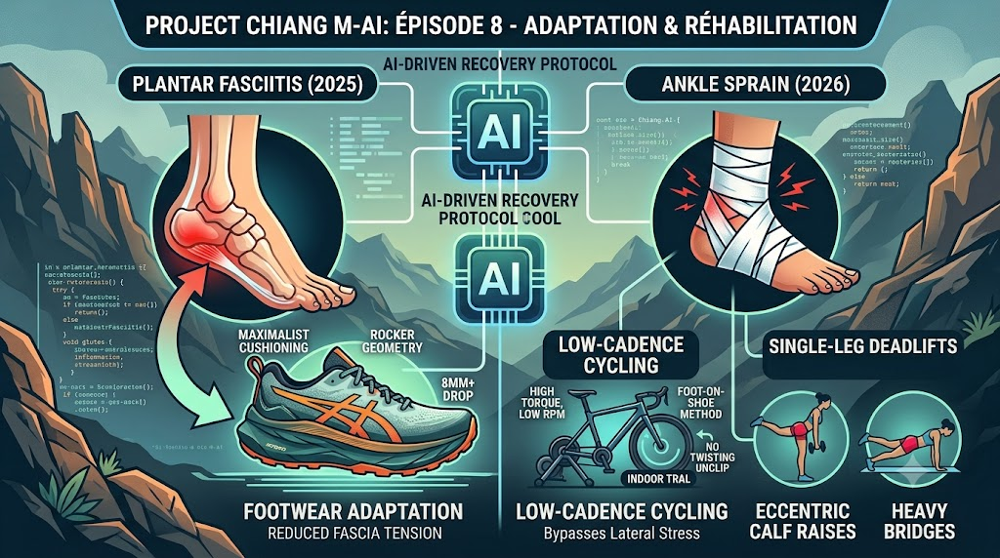

No ultra-running training plan executes perfectly from start to finish. The high mechanical stress of building volume inevitably tests the body’s durability. When a physical limitation arises, the goal isn’t to stubbornly push through the pain, but to adapt the parameters—keeping the aerobic engine running while allowing damaged tissues time to heal.

In this episode, we break down how my AI coach helped me navigate two distinct physical setbacks: a severe bout of plantar fasciitis (aponevrosite plantaire) in 2025, and a sudden ankle sprain at the dawn of the 2026 season.
1. Plantar Fasciitis: The 2025 Flare-Up
During the build-up for the 2025 Chiang Mai 100k, my August training block was sharply derailed. I began experiencing severe, localized heel pain—most aggressively during those first few agonizing steps out of bed in the morning.
Based on the symptom profile, the AI coach suggested a high probability of plantar fasciitis, a diagnosis later confirmed by a doctor and an ultrasound. Rather than prescribing complete rest, the system immediately pivoted my schedule to non-impact cross-training on the home trainer, and later designed a progressive return-to-running plan to rebuild impact tolerance without triggering a relapse. The objective was simple: match the targeted cardiovascular stimulus (both endurance and intervals) while giving the plantar fascia absolute rest from ground impact.
To preserve local muscular endurance and tendon stiffness without running, the coach prescribed specific low-cadence cycling sessions. By grinding out high torque at a low pedaling rate (around 50–60 rpm), these workouts successfully simulated the heavy muscular demands of steep mountain climbing.
2. The 2026 Ankle Sprain: Triathlete Hacks & Physio Validation
Right at the start of the 2026 season, during my very first training run, I suffered a sudden ankle sprain. The timing was bitterly ironic—it happened just one day before I was scheduled to begin my proprioception block.
Once again, the AI refactored the schedule to protect the injured joint while keeping the cardiorespiratory engine active. It directed me back to the home trainer, but with a crucial modification to avoid placing lateral tension on the healing ankle ligaments: it suggested riding normally with my cycling shoes clipped in, but slipping my foot out of the shoe when stopping, leaving the shoe itself clipped to the pedal to avoid having to perform the twisting unclipping motion.
When I ran this protocol by my physiotherapist, she validated the approach and added a critical piece of biomechanical insight: * The Danger of Unclipping: She warned that the sharp, twisting motion required to release a cycling cleat places immense lateral shear force on the ankle ligaments, which could easily re-tear the healing tissue. * The Slip-Out Workaround: By riding normally and simply sliding my foot out of the shoe at the end of the session, leaving the shoe clipped to the pedal, I could harvest 100% of the cardiovascular benefits while completely bypassing the risk and twisting motion of unclipping.
3. Engineering the Footwear Rotation
Plantar fasciitis is heavily influenced by running mechanics and load distribution. The AI coach audited my shoe rotation and prescribed a transition to footwear engineered specifically to offload tension from the plantar fascia:
- Maximalist Cushioning: High stack heights to aggressively dampen vertical impact forces.
- Rocker Geometry: A curved sole that acts as a fulcrum, rolling the foot forward to reduce toe extension and minimize mechanical stretch on the fascia during push-off.
- Moderate to High Drop: An 8mm+ heel-to-toe drop to reduce the baseline stretch and eccentric load on the calves and Achilles tendon.
This targeted criteria led directly to adopting the Asics Trabuco Max, which became my primary volume shoe, keeping my feet heavily protected and pain-free over long mileage.
4. Restructuring Strength Training for Durability
The biggest delta between my 2025 and 2026 preparations was the complete overhaul of my strength conditioning.
In 2025, my strength sessions were limited to light core work, basic ankle stability, and quick bodyweight routines. While beneficial, they failed to address the chronic weakness in my posterior chain (calves, soleus, hamstrings, and glutes)—the root biomechanical cause of my plantar fasciitis.
For 2026, the AI coach introduced highly structured, progressive load sessions explicitly targeting the posterior chain: * Eccentric Calf and Soleus Loading: Heavy, slow calf raises designed to increase the structural load tolerance of the Achilles tendon and plantar fascia. * Proximal Chain Integration: Movements like single-leg deadlifts and heavy glute bridges. The goal was to ensure the massive muscle groups of the upper leg absorb the shock of running, rather than letting those forces travel down to be absorbed entirely by the foot.
Conclusion: Field-Tested Validation
The ultimate stress test for this rehabilitation and adaptation strategy was the Trail du Saint Jacques (Episode 7). Despite hammering through 70km with 3,200 meters of elevation gain across steep, highly technical descents, both my ankle and my plantar fascia remained completely silent.
By combining targeted posterior chain strength work, protective rockered footwear, and low-cadence cycling to build force without impact, we successfully engineered the mechanical durability required to keep my feet healthy on race day.